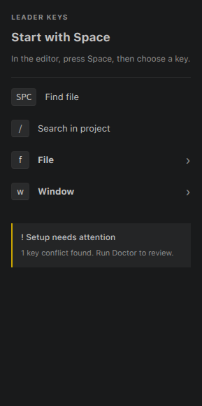
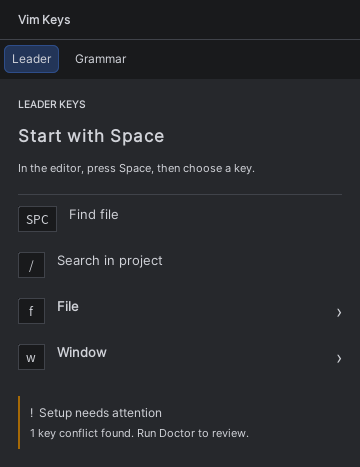
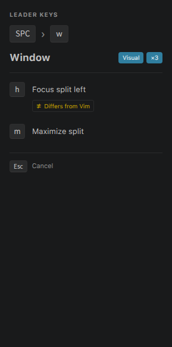
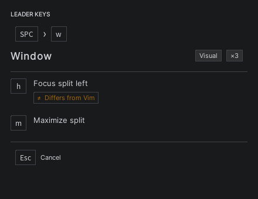
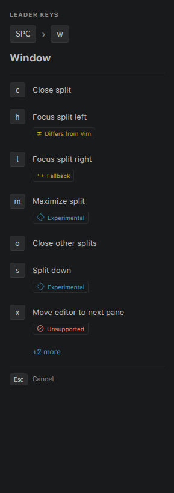
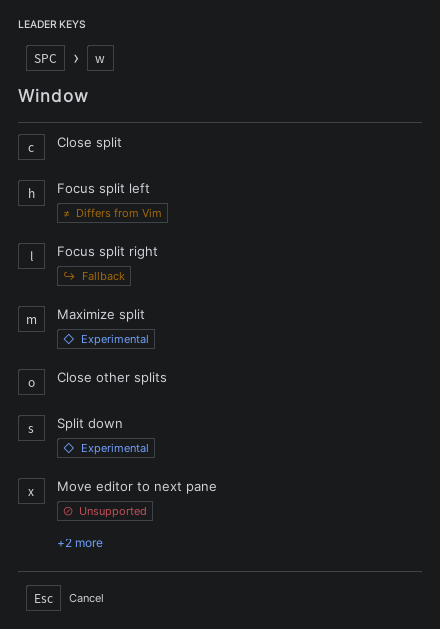
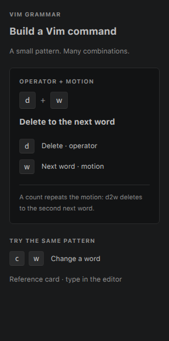
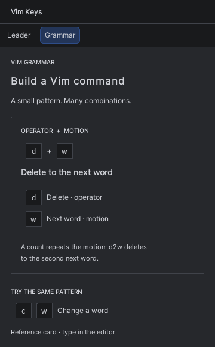

01
A clear place to begin
The root list, group chevrons and a quiet setup notice.


02
Keep the next key in view
A keycap trail, the Window group, and separate Visual and count indicators.


03
Explain exceptions in words
Four icon-and-text badges, a 24-character label and a shared overflow example.


04
Teach a reusable pattern
A static operator-and-motion card. This design does not require live input observation.

